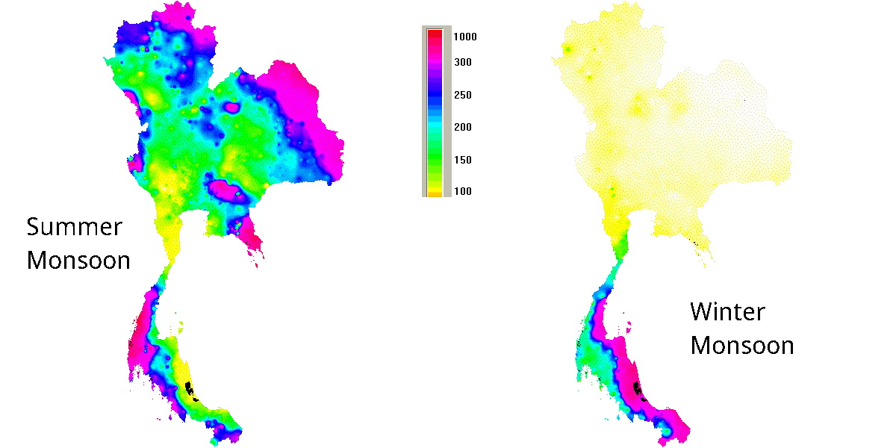

Summer Monsoon
Table of Contents
Dear Members of the PhD selection committee,
Thank you for taking the time to look at my application for a PhD at your department. I've had the privelege to work with Professor Ludvig Löwemark over the past year and have greatly enjoyed learning from him and helping his team streamline their work. I deeply appreciate the mentorship he has provided me and I hope you allow me to continue the work I've been doing with him. The PhD would give me the framework to work on a larger multifaceted multiyear project. As well it would allow me continue my education in the geosciences and to profit from Professor Löwemark's extensive experience and fantastic mentorship. I also would hope that my background in the hard sciences, industry and electronics would compliment his field experience and would bring a unique outside perspective and skillset to Professor Löwemark's lab and the department as a whole.
Below is my proposal for a research concept that would take several years and would build on Professor Löwemark's ongoing work in the Thailand peninsula. All ideas presented are my own unless otherwise indicated.
Introduction
The variablility of the annual asian monsoon's intensity has been a major driver behind the change in climate in the region. These changes over the centuries have precipitated changes in biomes, have triggered the collapse of empires and the displacement of peoples. Therefore understanding the dynamics and evolution of how monsoons is of some import when it comes to anticipating future trends for the regional climate. With a ever-quickly changing climate this need becomes more acute. The answer to these questions lies in the climate record.
In this proposal I present a general framework for improving our understanding of the asian monsoon's past trends based on previous work done in the area. It present a general research trajectory, but many details and either ommitted or unresolved. Tangential possibilities, like looking at other proxies, collaborations or research sites are also left implied and are ommitted for brevity. The proposal is divided into semi-independent pieces which trying to answer one piece of the puzzle that lies in the climate record. Simultaenously, as I hope I'm able to illustrate, they aim to build on each other and illustrate a complete picture of the historical monsoon in South East Asia.
Through collaboration with Professor Löwemark I've narrowed down the study area primarily to the caves on Southern Thailand. This both compliment his ongoing work as well as leverages his existing contacts and experience in the area. However, the choice is not simply of convenience but actually presents a couple of crucial practical advantages that are unique to the Malay Peninsula.

Source: Royal irrigation Department Thailand
- The first advantage is purely geographic; because Southern Thailand lies between the Indian ocean and the South China Sea it lies in the path of both the Summer monsoon (SM) and Winter monsoon (WM) with high precipitation coming from both systems.
- The second advantage is that the region, famous for its beautiful karst towers, boasts a staggering amount of cave systems giving me a wide selection of candidate research locations. As we'll see, the selection of a proper cave is crucial for generating useful data. The speleothem within provide a long stable geological records that is closely tied to precipitation. The derived signals have been shown to be highly repeatable and there are fewer confounding external factors such as found in other limate records.
- I further suspect that karst tower will have much more easily characterizable dynamic when it comes to absorbing precipitation because of the limited amount of surrounding earth (and therefore due to a smaller water retention capacity will exhibit less histeresis).
Phase 1 : 1 Cave Replication
The first phase would be a replication of the existing work done in the Hulu and Dongge caves in China by [Wang] Through Professor Blah Blah and his team's pioneering work they have manged to find a distinct link between changes in insolation (due to orbital forcing) and monsoon dynamics.
Their critical insight was that the Summer Monsoon, the larger of the two - driven by the heating of the Tibetan plateau, due to intense fractionation/precipitation over the Indian Ocean has a much lower concentrations of 18Ocave relative to the smaller Hadley cell driven Winter monsoon. By measuring the changes in 18Ocave that has precipitated out as carbonate/limestone on the stalagmites in the Dongge cave they managed to observe the changes in the ratio of precipitation of Summer to Winter monsoon.
It will be useful for further discussion to quantify these values:
If the amount of precipitation from the SM is SSM and the WM is SWM then
18Ocave ∼ SSM/[SSM+SWM] × 18OSM + SWM/[SSM+SWM] × 18OWM
[NEEDS MORE FORMULA MASSAGING HERE]
Since they determines that at present the Summer monsoon accounts for ~80% of the annual precipitation at the cave site (ie SSM/[SSM+SWM] ≅ 0.8) and 18OWM > 18OSM the likely culprit to decreases in 18Ocave was that the Summer monsoons become more severe. They found that there was a strong correlation between changes in 18Ocave and changes in global insolation.
[Is it okay to steal figures here…?]
Beyond orbital-scal changes, because of the fine detail provided by speleothems, they manage to find finner details like changes during the Younger Dryas and Heinrich Events. They also observed a good correspondence between the changes in 18O and the climate records from Greenland cores.
The first phase would be simply to replicate this study in a karst tower cave to confirm that this method would provide similar results to the ones found in China and that insolation correlates with changes in 18O.
Expected results
- a very high resolution of information
- ability to detect very small changes in climate
- very repeatable results with values between different stalagmites matching incredibly closely
Issues
- The difference in SM and WM 18O in Thailand could much smaller than in China
- 18O is a purely one dimensional proxy - and cave systems don't easily provide others.
- An increase in 18O can both correspond to an increase in SM precipitation or a decrease in WM precipitation
Phase 2 : A 2 Cave System
To address the lack of dimensionality in the 18O measurements, I propose extending the previous method to two cave
The first cave would have similar characteristics to the one in China - with predominantly SM precipitation. The second cave would be selected to predominantly get NM precipiation. The cave site should be selected in close proximity to avoid issues due to differences in insolation, composition, etc.
And here the Malay peninsula has the exact conditions we are looking for. It's a rather skinny penninsula with strong WM rains on the nothern-eastern shore and strong SM rains on the southern-western shore - with a low mountain range in the middle providing the necessary rain shadow effect.
South Cave:
18Osouth ∼ SSM/[SSM+SWM] × 18OSM + SWM/[SSM+SWM] × 18OWM
North Cave:
18Onorth ∼ NSM/[NSM+NWM] × 18OSM + NWM/[NSM+NWM] × 18OWM
While looking at 18O values doesn't give us insight in to the unknowns: SSM,SWM,NSM,NWM; what we can safely assume is that an increase on 2x in the SM would lead to an equal increase in the SSM and NSM. Mathematically speaking
∂SSM/∂t( SSM/[SSM+SWM] ) = ∂NSM/∂t( NSM/[NSM+NWM] )
∂SWM/∂t( SWM/[SSM+SWM] ) = ∂NWM/∂t( NWM/[NSM+NWM] )
18OSM and 18OWM will have been determined from Phase 1's rain studies
Phase 3 : Trickle Down Caveanomics
One thing not mentioned in the previous discussions has been the effect of the actual cave system. This is a topic of ongoing research by Professor Löwemark and complements this proposed project.
What Professor Löwemark is currently investigating is the response of the cave system to the intensity of rain above it. As he has theorized, several possible mechanims could be at play:
- A heavy rain above a cave system quickly saturates a certain above-ground layer on the karst tower and past a certain point rain starts to pool and pour past the cave system as surface water.
- Light rains will quickly evaporate back into the atmosphere before having the chance to absorb into the soil
These mechanisms (and potentially others to be discovered) would present a complex mechanism for the precipiation to actually turn into drip water in the cave system. If these could be properly characterized as a transfer function
f(precipitation) → dripcave
then if the dynamics are not too complicated we could hope to build an approximate inverse transfer function
f-1(dripcave → precipiation
In the context of reconstructing monsoon histories, this would help add a correcting factors. At the very basic level I would expect that increases in monsoon precipitation would not linearly lead to increases in cave drip.
Expected result
- A better understanding of how caves affect the precipitation record in speleothems
- Could potentially allow one to recontstruct surface precipitation values
- This completements ongoing work
Issues
- The effects are on the weather-scale - and they will need to be somehow extrapolated to the climate scale
Phase 4 : Lets check the weather
To further refine the results would require an indepth meterological study of the area. Things to be resolved
- How does a season change in monsoon intensity translate to changes in local weather?
- Maybe.. More intense rains (in mm/hour)?
- Maybe.. rains of the same intensity but longer in duration?
A better understanding in conjunction with the study of the cave's precipitation-transfer-function could yeild a seasonal-average-transfer function that could tell me how an increase in monsoon strength maps to an increase in water reaching the cave. With that I can beging to reconstruct the true changes in monsoon/precipitation intensity
- While measuring the 18O above the cave in different seasons and in different locations should yield good reliable values for the 18O in both the SM and WM - these values are most likely not particularly stable from one rain storm to another. Looking at where the precipitation originates - both its origin and its path to the cave - could allow for a better understanding of the 18O values for each monsoon and its variablility.
Expected result
- Would greatly refine the previously measured effect and value and allow the historical record to more accurately reflect the on-the-ground precipitation
- Would potentially allow both Professor Löwemark and I to eshew having to measure 18O values on the ground as they could be reliably estimated from weather reports.
Issues
- This final phase of the project is more outside of the realm of expertise of the department and may require external collaboration.
- The difficulty of these issues is hard to gauge at this point without extensive additional research. These may be already solved or are still open problems in meterology.